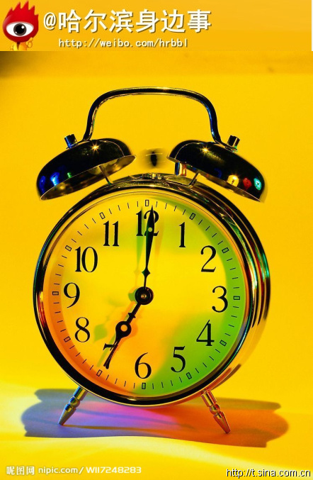
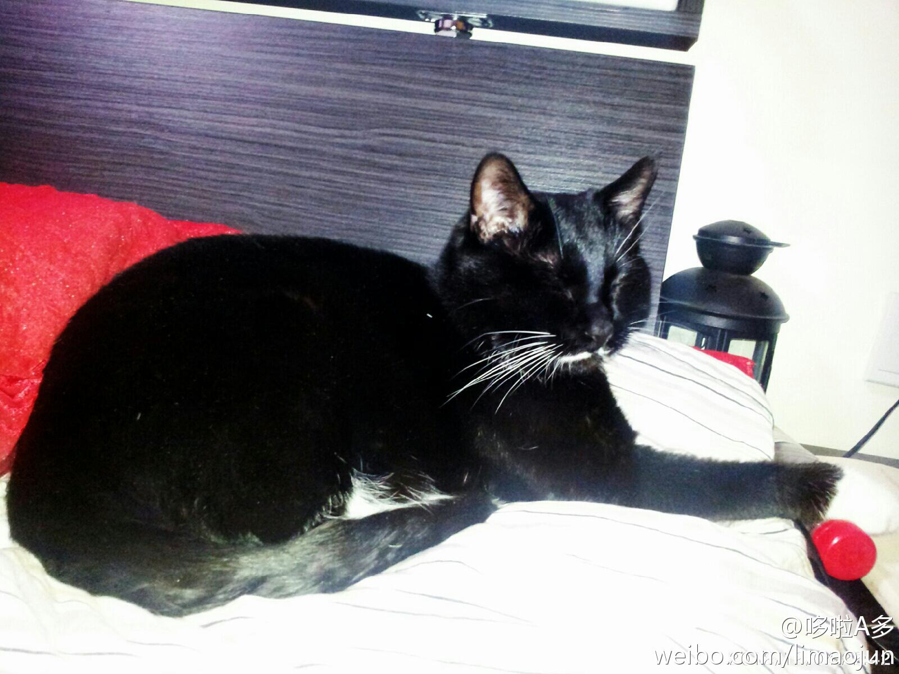

加班给加班费我就同意迟到罚款～@哈尔滨身边事:#冰城关注#【雪天上班迟到遭罚款 市民呼吁单位多体谅】近日，因雪天车辆难行，有不少上班族抱怨因上班迟到被扣钱，他们呼吁更为人性化的管理制度。对此，律师表示：雪天迟到用人单位虽有权罚款，但金额要适度。[详情：网页链接 ] 以人为本嘛哈哈 
史上最变态的一只猫，每天我一进屋就开始跟着我，又要趴在身上又要坐在腿上的，到了十点半这家伙就喵喵的在旁边叫，催着我去睡觉，直到确认我走进卧室不出去了，它才趴下。我就在想，你没爷们儿能死么，没爷们儿还不睡觉了啊？扩孤，这家伙是公猫……你困就自己睡呗，你妹的！！！！ 